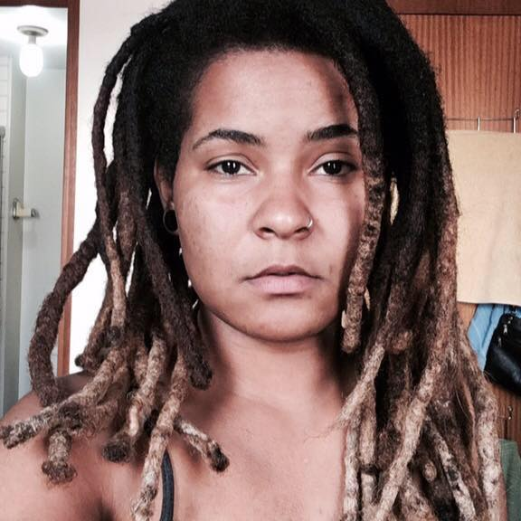

Funções / Microfone
As informações de cada perfil são de responsabilidade das profissionais.
Você quer conhecer profissionais de quais estados?
Marcar/Desmarcar todos
CARREGANDO ...
Andressa Clain (SP)
Andressa Clain
26 anos | São Paulo (SP)
andressaclainneves@gmail.com
Andressa Clain é formada em "Fundamentos de Áudio e Acústica" pelo Instituto de Áudio e Vídeo - IAV. Atualmente trabalha como microfonista. Tendo feito recentemente o filme "Guigo Offline" (Telefilme para a TV Cultura), o filme "Sobre Rodas", o curta "Vaca Profana", série documental para HBO chamada "Jovens Primeira Liberdade", a série "Vidas Secretas dos Casais" também para o canal HBO, realizou esses e mais outros trabalhos. É técnica de áudio no Projeto Empoderadas.